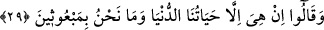
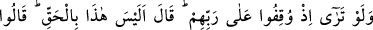
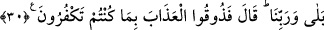

etmiştir. Allah’ın hükmünü geri çevirecek ve O’nun ezelde verdiği hükmü değiştirecek
kimse yoktur.
“Çünkü onlar yalancıdırlar.” Onlar öyle bir topluluktur ki işleri ve güçleri hep
yalandır.
Bu âyete istinâden isyan eden ve fesad çıkaranların öldürülmesine fetvâ verilir.
Çünkü kendilerine yasaklanan şeye geri dönmelerinden emin olunamaz.
Mesnevî’de şöyle denilmiştir:
Karşılaştığı sıkıntı sonucu duymuştur bu pişmanlığı
Yoksa hazine gibi aydın olan aklın sonucu değil
Sıkıntı geçti mi, o pişmanlık yok olur
O tevbe ve pişmanlık toprak değerinde bile değildir
O adam tevbe eder, ama akıl pîri şöyle der:
“Tekrar döndürülseler dünyaya, yapılmayacakları yine yaparlar”
29. Onlar, hayat ancak bu dünyadaki hayatımızdan ibarettir; biz, bir daha da
diriltilecek değiliz, demişlerdi.
“Dediler ki: “Dünya hayatımızdan başka bir hayat yoktur.” Yaşamakta olduğumuz
bu hayattan ayrıldıktan sonra “biz diriltilecek” yeniden diriltme ve haşr gibi bize
vadedilen halleri görecek “değiliz.”
30. Rablerinin huzuruna getirildikleri zaman sen onları bir görsen! Allah: Bu
(yeniden dirilme olayı), hak değil miymiş? diyecek. Onlar da “Rabbimize andolsun
ki evet!” diyecekler. Allah da, Öyle ise inkâr ettiğinizden dolayı azabı tadın!
diyecek.
Tıpkı suç işleyen kölenin cezalandırılmak üzere efendisinin huzurunda durdurulması
gibi “onlar Rab’lerinin huzurunda durdurulmuş iken” hesaba çekilmek üzere tutulmuş
iken onların halini “bir görsen” çok büyük bir şey görmüş olursun.
Cenab-ı Hak meleklerin lisanıyle onları azarlayarak: “Bu” öldükten sonra dirilme ve
hesaba çekilme “gerçek değil miymiş?” diyecek. Onlar da: “Evet, Rabb’imiz hakkı
için gerçektir.” diyecekler. Allah da: “Öyleyse inkâr ettiğinizden dolayı azabı tadın!”